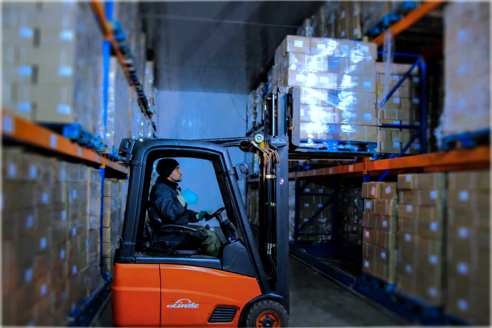
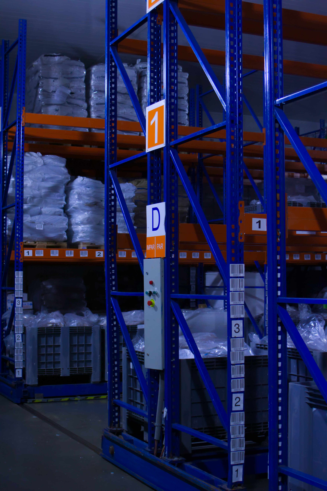
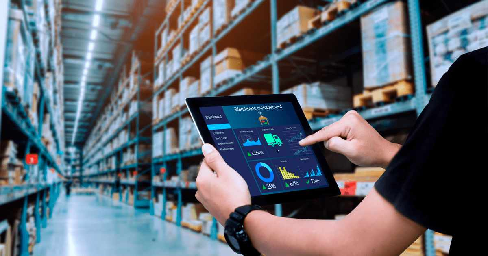
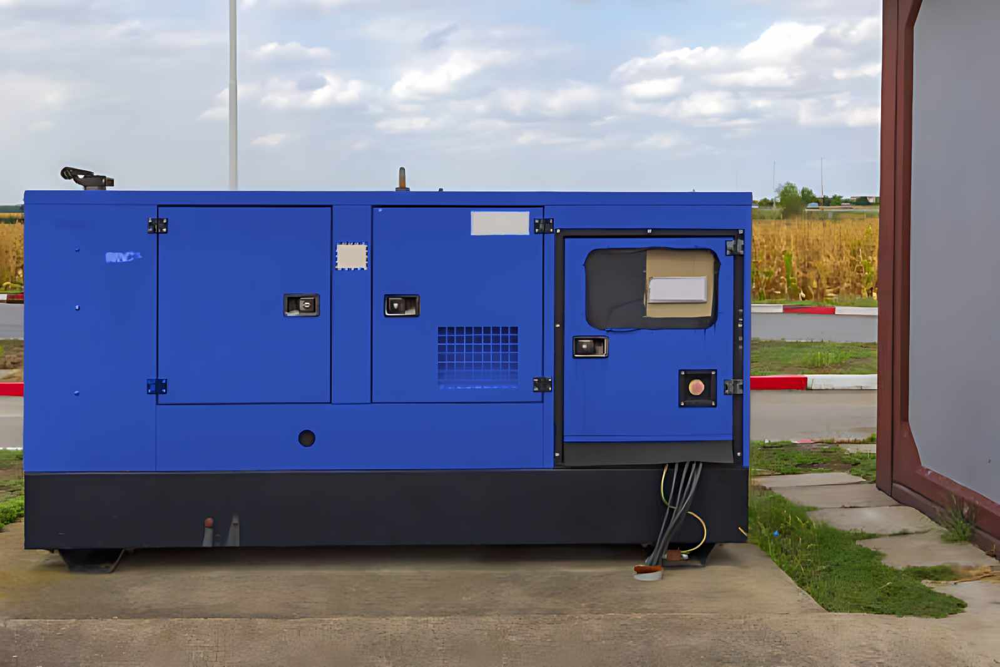

Capacidade, Infraestrutura e Tecnologia
Soluções completas de armazenagem e logística com controlo rigoroso de temperatura, tecnologia avançada e infraestrutura moderna.

3.300 Paletes
Capacidade total para armazenamento em larga escala, garantindo stock constante.

12.000 m³
Câmaras frigoríficas modernas e eficientes para conservação ideal.
Monitorização 24/7
Controlo contínuo com alertas imediatos para garantir a segurança alimentar.

Sistema WMS
Gestão avançada de stocks e rastreabilidade total de todos os lotes.

Energia de Emergência
Geradores e sistemas UPS para garantir continuidade operacional em qualquer situação.